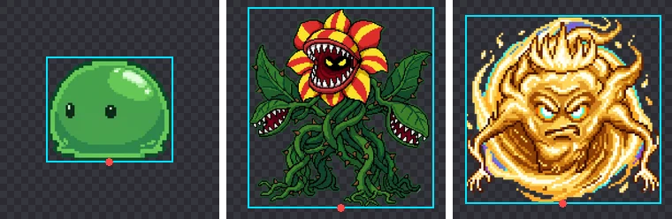
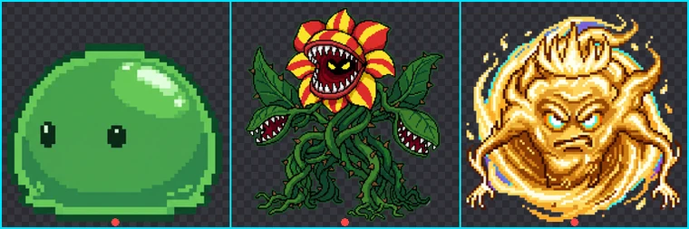

Turn AI Sprites into Unity and Godot Sprite Sheets
AI image tools give you one character per image, drawn at a different spot on a large canvas every time. Game engines want frames of the same size, aligned to the same pivot. This guide covers every step in between, from background removal to engine import.
1. Remove every background with the same rules
Generate every image on a solid background (see the prompt guide), then drop the whole folder onto BGPeel. Processing all frames in one batch with the same settings means edges are treated identically, so outlines don't flicker between animation frames. Keep the format on PNG and download at the original size for now; scaling is more accurate when done once, while building the sheet.
2. AI images vary in position and size
Put the results side by side and draw a box around each object, and the problem is obvious. All three test monsters were on 2048×2048 canvases, but the plant spans 84% of the canvas width and the slime 58%, and their vertical positions differ too.

Packed as is, an animated character would jump up and down and grow and shrink from frame to frame. So before packing, align two things:
- Pivot: for standing characters the usual choice is the bottom center, where the feet touch the ground. For flying monsters or effects, use the center.
- Scale: all frames of the same character must be scaled by the same factor. Fitting each frame to its cell separately makes the character's size keep changing.
3. Check the real pixel size
AI-generated pixel art looks like real pixel art scaled up. Measuring how often colors change along rows, we found that one "pixel" on a 2048px canvas was about 10px wide for the plant and about 20px for the slime and the spirit. In other words, their effective resolution is roughly 200px and 100px.
There's no reason to ship 2048px images to the game. Scaling to 128px or 256px cells, matched to the on-screen size, cuts file size and memory dramatically. AI pixels don't sit on an exact grid, though, so even an exact 1/10 nearest-neighbor reduction can leave the pixels uneven. Scaling smoothly (as BGPeel and the script below do) and displaying at the size you need is the safer route.
4. Pack the sheet (Python script)
The script below reads the transparent PNGs in a folder in name order, crops the transparent margins, scales everything by the single factor that fits the largest object in a cell, and places each frame at the bottom center of its cell. All you need is Pillow (pip install pillow). This is the exact code we ran on the three monsters above to produce a 768×256 sheet.
import math, sys
from pathlib import Path
from PIL import Image
src = Path(sys.argv[1]) # folder of PNGs from BGPeel
cell = int(sys.argv[2]) # cell size in px, e.g. 256
cols = int(sys.argv[3]) if len(sys.argv) > 3 else 8
frames = [Image.open(p).convert("RGBA") for p in sorted(src.glob("*.png"))]
boxes = [f.getbbox() for f in frames] # box around non-transparent pixels
biggest = max(max(b[2] - b[0], b[3] - b[1]) for b in boxes)
scale = (cell - 8) / biggest # one scale for every frame
cols = min(cols, len(frames))
sheet = Image.new("RGBA", (cell * cols, cell * math.ceil(len(frames) / cols)))
for i, (f, b) in enumerate(zip(frames, boxes)):
body = f.crop(b)
body = body.resize((max(1, round(body.width * scale)), max(1, round(body.height * scale))), Image.LANCZOS)
x = (i % cols) * cell + (cell - body.width) // 2 # centered horizontally
y = (i // cols) * cell + cell - 4 - body.height # 4px above the bottom
sheet.alpha_composite(body, (x, y))
sheet.save("sheet.png")
print(f"{len(frames)} frames, {cell}px cells, {cols} columns -> sheet.png {sheet.size}")Run it as python make_sheet.py folder 256 8: folder, cell size, columns. Frame order follows file names, so pad the numbers, as in walk_01.png.

The script crops each frame separately and aligns it at the bottom center, which suits frames the AI drew independently. If instead the change in position is the motion, such as an attack where the character lunges forward, crop every frame with the same box to preserve the movement: replace boxes with a single box that contains all of them.
5. Importing into Unity
- Add the sheet PNG to your project and, in the Inspector, set Texture Type to “Sprite (2D and UI)” and Sprite Mode to “Multiple”.
- Open the Sprite Editor, choose Slice, set Type to “Grid By Cell Size”, Pixel Size to your cell size (e.g. 256×256) and Pivot to “Bottom”, then click Slice and Apply.
- For pixel art, set Filter Mode to “Point (no filter)” and Compression to “None”. Compression smears color along pixel boundaries.
- Check Max Size. If the sheet is wider than this value, it is scaled down on import and turns blurry.
- If you use smooth (Bilinear) filtering, enable Alpha Is Transparency. It fills the color of transparent pixels from their neighbors, preventing dark outlines.
That last point matters for BGPeel output in particular. BGPeel stores fully transparent pixels with the color 0 (black). When the engine smoothly interpolates at edges, that black can bleed in as a dark outline; the option above prevents it. Point filtering doesn't interpolate, so it isn't affected.
6. Importing into Godot 4
- For pixel art, set Default Texture Filter to “Nearest” under Rendering → Textures in Project Settings. You can also set Texture Filter per node.
- Create an AnimatedSprite2D node, give it a new SpriteFrames resource, and in the SpriteFrames panel use “Add frames from sprite sheet” to open the sheet.
- Set the horizontal and vertical cell counts (e.g. 8×1), select the frames to add, and set the speed (FPS) and looping there.
- To pivot at the bottom center, move the node's Offset up by half the cell height (y = −128 for 256px cells).
Monsters and items without animation don't need a sheet at all. A Sprite2D with Hframes and Vframes can pick one cell of a sheet, or you can simply use separate PNGs. Godot's “Fix Alpha Border” import step cleans up the color of transparent edges, so there's less to worry about than in Unity.
Summary
- Remove all backgrounds in BGPeel at once, with the same settings.
- AI images vary in position and size: scale by one factor and align at the bottom center.
- AI pixel art has an effective resolution of about 100 to 200px, so 128 to 256px cells are plenty.
- In the engine, use Point/Nearest filtering and no compression for pixel art; with smooth filtering, enable the transparent-edge fix.